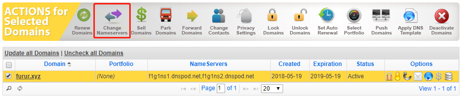
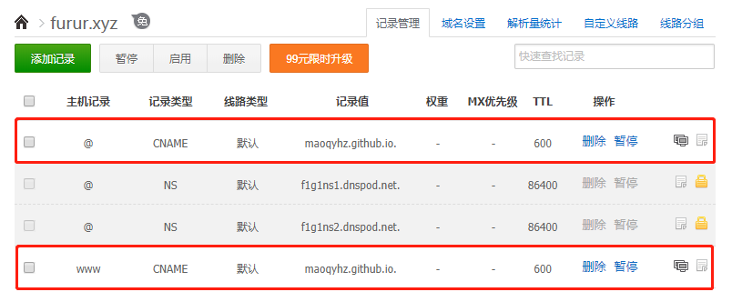

这并不是一篇博客搭建教程。内容主要包含个人对于Hexo博客搭建的心得，Next6.0主题美化的部分建议，以及摘录一些各种用于博客搭建的link。
惯例，第一篇博客献给Hexo。
个人博客的搭建不外乎两种，类似Wordpress的动态博客，类似Hexo的静态博客。前者搭建好了之后维护起来还是比较方便的，不管是发文还是添加分类等等都可以在后台管理中进行；而后者则需要手动进行管理，从博客的美化到内容的维护，当然也存在hexo-admin这类的插件。However，前者需要一个服务器，emmm，后者的话托管在github或者coding就ok，短时间内能用完100M的估计也是人才了。
Absolutely，博主选择了后者。Hexo的教程网上多了去了，也写的够详尽够简单了，毕竟Hexo本来也就是一个快速的blog搭建工具，因此也就不再写完整教程了。下面我会写一些针对于当前版本的Hexo以及最受欢迎的主题Next的一些tips，主要内容如下：
- 搭建一个Hexo&Next的最小博客系统
- Next主题美化心得
- 域名绑定
- 关于博客图片
- 备份维护的Tips
搭建一个Hexo&Next的最小博客系统
论最小系统的重要性。对于任何一个需要搭建的系统，无论是博客还是论坛，我都推荐新手先根据教程搭建一个最小系统。最小系统顾名思义，就是一个满足需求的最小化的系统。举个栗子，比如你需要搭建Wordpress，这个时候我们就可以先搭建一个最基本的Wordpress博客，即可以进行内容的发布和管理，然后再根据自己的需求去进行主题的美化和插件安装等等，这样操作会更具有条理性。完全没有必要第一次就期望能够顺利搭建完成，直接用于实际生产应用环境。
再看Hexo，Hexo搭建的过程就是单纯的配置文件形式和命令行。有些教程写的非常长，从安装环境、本地部署、美化、第三方插件写到域名、SEO优化等等。内容太多，太复杂，这对于新手就显得不那么友好了。因此在这里，我仅仅描述了如何搭建一个Hexo&Next的最小博客系统，不夹杂其余一些美化优化等操作，待大家玩熟了之后，再进行一些高级的配置。最小博客系统的搭建分为以下几个步骤：
- 本地环境搭建（Git、Node.js）
- Github创建博客仓库，初始化GitHub Pages
- 本地搭建Hexo博客
- 部署到GitHub Pages
- . 主题美化
Attention： 这里未包含域名绑定的过程，因为无论GitHub Pages还是Coding Pages，都可以通过用户名自带的域名访问，如果购买了域名的，可参考附录进行域名绑定。
1-4步具体的过程可参考GitHub Pages + Hexo搭建博客，按照这篇博客的步骤走，基本上几分钟时间就可以搭建一个默认主题的Hexo博客了。
默认的主题并不是那么好看，这里我们选择目前最流行的Hexo Next主题，该主题非常简洁，并且有非常详细的配置文档，对于不愿意花大时间在博客美化上的人来说，是极好的。
主题应用具体可参考Next官方文档，我们需要根据文档配置一下信息：
- Scheme
- 语言
- 菜单，包括标签、分类、关于等
- 作者昵称和站点描述
经过以上几个步骤的配置，一个基本的个人博客就已经成型了，可以在上面进行内容的发布，这也就是上面所提到的一个最小系统。
Next主题美化心得
搭建完最小系统的Hexo博客，其实已经可以正常工作了。但是Next主题给了我们更多DIY的空间，根据官方配置文档，我们还能配置例如评论、统计分析、搜索等其他一系列的功能。大家可以根据自己的喜好进行配置。
但是，需要提出的就是，Hexo本身主打的是轻量级博客系统，过多的美化可能会导致博客的卡顿。因此，我只推荐以下个性化设置：
Github banner
在Next6.0之后，配置自带github_banner，只需要在后面添加自己的github地址即可，例如：1
github_banner: https://github.com/maoqyhz || Follow me on GitHub
博文置顶
- 评论系统和单篇文章统计
这里把这两部分何在一起，主要他们都用到了LeanCloud服务。LeanCloud是一个后端服务商，我们在上面注册后，就可以免费使用其统计和评论的服务。当然，据说leancloud_visitors有一个安全问题，对此比较敏感的可通过Leancloud访客统计插件重大安全漏洞修复指南进行手动修复，也可忽略。 - 全站统计
- 开启本地搜索
- 博客字数统计和阅读所需时间
旧版的next主题使用的是hexo-wordcount插件，新版已替换成hexo-symbols-count-time
上述的美化配置，均可在Next官方文档和hexo的next主题个性化教程:打造炫酷网站中找到。
域名绑定
github page自带二级域名，同时也支持绑定个人域名。
域名其实分为注册和绑定两部分。
第一，需要去域名服务商哪里购买域名，国内：万网、Dnspod；国外选择余地就更大了，具体的价格可参考www.domcomp.com。博主是在namesilo里买的，价格相对比较便宜。
第二，域名绑定。如果是像博主这样在国外服务商买的域名，一般就不使用其域名解析服务（NS）了，可以换成国内的Dnspod。然后设置别名即可，不需要添加A记录。
具体操作如下：
- 更换域名服务商的NS，以namesilo为例。


- 在Dnspod中添加域名和记录。

- 在博客源文件
source/目录下创建一个无文件类型的文件CNAME，并添加自己的域名，例如furur.xyz。更新部署到github上。
由于NS修改需要时间，过一段时间可以刷新下网页看看。
关于博客图片
Hexo博客搭建完后，大多会选择部署到Github Pages或者Coding Pages上去，这时候由于空间问题，大家可能会对于博客中的图片放哪的问题存在困惑。网上大多数的人都推荐使用各种图床或者云服务（七牛云）。但是个人觉得如果不是嫌图片加载的速度过慢，其实直接上传图片到github就可以了。Github Pages每人的空间有100M，毕竟技术博客中包含的图片有限，实在有大图，可以先进行在线压缩。一般一篇博客1M都不到，待有恒心写满100篇博客在说吧。上传图片，需要将Hexo配置文件中的post_asset_folder设为true，然后在博客创建时，会在source文件夹下创建于博客同名的文件夹。在里面放图片，博客中直接引用文件名即可。
备份维护的Tips
Hexo博客需要本地静态部署后，push到服务器上去。善于思考的，应该会想到如果换电脑了，应该如何继续写博客部署到服务器上去呢？具体可参考使用hexo，如果换了电脑怎么更新博客？
其实原理很简单，知乎中提到的这么多方法，无非就是将除了部署生成的文件之外，其余的文件夹以及配置文件都单独保存好即可。保存的方法自然有很多，可以新建一个源代码分支，也可单独用云服务进行备份。
总结
对于coding相关的人来说，Hexo的搭建可以说是非常简单了，加上网上资料丰富，大家可以随意折腾~~~